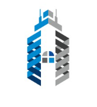

Introduction
As a Machine Learning and Data Science enthusiast, one of the most intriguing and essential areas of study is Explainable AI (XAI). While building sophisticated models that achieve high accuracy is a critical goal, it's equally important to understand and trust the decisions made by these models. This is where XAI comes into play, providing transparency, accountability, and insight into the inner workings of AI systems. In this blog, we'll explore what XAI is, why it's important, and how it can be implemented in practical applications.
Understanding Explainable AI
Explainable AI refers to methods and techniques in applying AI such that human experts can understand the results of the solution. It is different from the ‘black box’ model where the working of the model is not explained. The primary objective of XAI is to increase the interpretability and understandability of AI systems without degrading their effectiveness.
Importance of Explainable AI
1. Trust and Transparency: Since AI systems are being applied in more sensitive areas such as healthcare, finance and self-driving cars, it is crucial that stakeholders have confidence in the systems. XAI plays a role in the creation of this trust by explaining how decisions are made.
2. Compliance and Ethics: With regulations like GDPR and the AI Ethics guidelines, organizations must ensure that their AI systems are fair and unbiased. XAI helps in auditing and verifying that the AI models comply with these regulations.
3. Debugging and Improving Models: Knowing the decision-making process enables the data scientists to detect and correct errors or bias in the models. This iterative improvement process is crucial for developing robust AI systems.
Techniques for Explainable AI
1. Feature Importance: Methods like LIME (Local Interpretable Model-agnostic Explanations) and SHAP (SHapley Additive exPlanations) assist in determining which features are more critical for the model’s predictions.
2. Visualization: Dimensionality reduction techniques such as t-SNE and PCA can be employed to plot the data in two or three dimensions to get a better understanding of how the data points are distributed and classified by the model.
3. Rule-based Methods: Decision trees and rule-based classifiers are easy to understand as they show how decisions are made based on the input features.
4. Model-Agnostic Methods: These methods can be applied to any machine learning model to analyze their behavior even without the knowledge of the model architecture. LIME and SHAP are examples of model-agnostic methods.
Practical Applications of Explainable AI
1. Healthcare: For medical diagnostics, it is essential to know why an AI model predicts a specific disease. XAI can assist doctors in comprehending the factors that have led to the diagnosis, thus improving the patient’s results.
2. Finance: For credit scoring and fraud detection, it is essential to have transparent decision-making. XAI makes sure that customers are informed as to why they were approved or rejected credit and assists in identifying fraud.
3. Autonomous Systems: In self-driving cars, explainability is useful in relating and verifying the steps taken by the AI system to avoid any risks and guarantee efficiency.
Challenges and Future Directions
Despite the numerous advantages of XAI, there are also some disadvantages that are associated with it. This is because the trade-off between interpretability and accuracy is always hard to find. In addition, there are often varying degrees of explanation needed depending on the stakeholder, which increases the difficulty.
The future of XAI is to create better and more advanced tools to meet the requirements of different users. There is current work to develop models that are inherently interpretable, and not at the cost of the models’ performance, to make AI more reliable.
Conclusion
The explainability of the results and processes is one of the most important aspects of the contemporary machine learning and data science. Besides, it creates trust and transparency, maintains ethical compliance, and helps to enhance the model. It is therefore clear that as we advance the use of AI systems in different fields the need for XAI will be even more significant. Thus, by adopting XAI, it is possible to develop AI systems that are not only effective but also explainable and reliable.
Experiences

Machine Learning/Deep Learning/Data Science Enthusiast
Freelance Projects via Fiverr (for a Fiverr Freelancer)
January 2022 - Present

Electrical Design Engineer
Husmah Engineering Pvt Ltd
2023 September - 2024 March
Temporary Demonstrator at Electrical and Telecommunication Engineering Department
South Eastern University of Sri Lanka
January 2022 - August 2023
Trainee Electrical Engineer
Ceylon Electricity Board
August 2021 - November 2021
Trainee Electronic Engineer
Sri Lanka Telecom PLC
March 2019 - May 2019